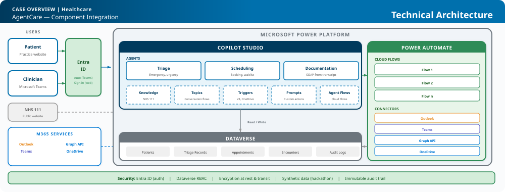

The Problem & What's Different
UK GP clinicians spend 35% of their time on admin (NHS England, GP Workload Survey 2023). Existing systems (EMIS, SystmOne) are passive record stores. AgentCare is event-driven and proactive: three AI agents via Copilot Studio trigger on calendar events and recordings, reach clinicians in Teams, draft SOAP notes from transcripts, and handle patient triage via LLM — understanding natural language ambiguity that rule-based systems cannot.
Triage Agent
Patient chatbot: emergency scan, NHS 111-guided symptom collection, urgency classification. Self-service booking or escalation to receptionist.
Scheduling Agent
Appointment booking, confirmations, cancellation waitlist. Integrated with Triage for priority slots.
Documentation Agent
Drafts SOAP notes from Teams consultation transcript, extracts clinical entities, saves to Dataverse, emails patient next steps.
KPIs measured via Dataverse audit logs: admin time = encounter duration delta, doc turnaround = transcript-to-approval timestamp, triage accuracy = clinician override rate.
Workflow 1: Patient Triage & Consultation Preparation

Workflow 2: Consultation & Documentation

Human-in-the-loop
- Patient consents to recording
- Clinician reviews and approves SOAP draft
- No autonomous clinical decisions
- Without consent: clinician types notes manually
AI-Human Chemistry
- Teams Copilot records + transcribes consultation
- Documentation Agent drafts SOAP from transcript
- Clinician reviews, edits, approves — owns the clinical content
- Full audit trail in Dataverse
Reliability & Fallback Modes
- Triage unavailable: Patient directed to phone; receptionist triages manually
- Scheduling unavailable: Receptionist books via calendar
- Documentation unavailable: Clinician writes notes manually
- No agent is a single point of failure for patient safety
- 99.9% SLA via Power Platform guarantees
- Triage response <2s, SOAP draft <30s
- Est. cost: Power Platform + Copilot licensing ~£500/practice/month
UX Simplicity
- Patients: Natural language chatbot on practice website — no app install, no login for emergency
- Clinicians: Stay in Teams — pre-consult briefing, SOAP draft, approvals all in chat
- Receptionists: Copilot Studio handoff for escalation — seamless
Technical Architecture

Platform Fit
Microsoft Power Platform
- Copilot Studio: 3 agents, topics, triggers (Outlook V3, OneDrive), prompt actions (GPT via built-in AI — no separate Azure OpenAI), agent flows, NHS 111 knowledge source
- Power Automate: Cloud flows for briefing, transcript fetch, confirmations, patient email
- Dataverse: Patients, triage records, appointments, encounters, audit logs
M365 Services
- Teams: Consultation recording + clinician chat
- Outlook: Calendar triggers (V3) + patient emails
- Graph API: Transcript fetch from recording
- OneDrive: Recording storage (.mp4)
- Entra ID: Authentication (SSO for clinicians, sign-in for patients)
Data, Governance & Security
- All data in Dataverse with RBAC
- Entra ID authentication for all users
- Encryption at rest and in transit
- Immutable audit trail for every agent action
- Synthetic data for hackathon — no real PII/PHI
- No autonomous clinical decisions (GDPR Art. 22 compliant)
- NHS DSPT-aligned design principles
- UK data residency (Azure UK South)
- Consent-based data retention policy
Scalability, Reuse & Cost
- Power Platform managed solution — one-click deploy to any practice
- Agent pattern reusable: dentistry, physio, mental health
- Knowledge source swappable (NHS 111 today, NICE guidelines tomorrow)
- Dataverse Git integration for CI/CD (Azure DevOps)
- Environment strategy: dev > test > prod via Power Platform pipelines
- Reusable patterns: triage chatbot, transcript-to-SOAP, event-driven briefing
- Hackathon: working prototype in 4 weeks | Post-hackathon: production pilot ~12 weeks